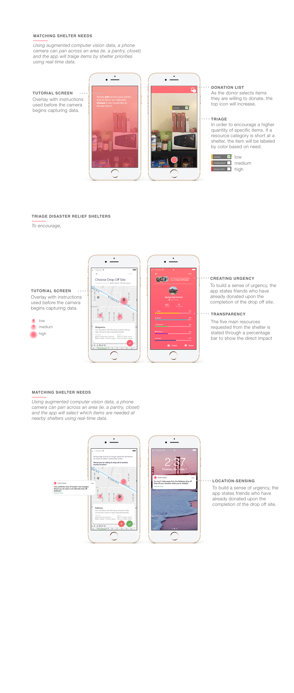

<html>
	<head>
		<title>Rebecca Yeap</title>
		<link rel="stylesheet" type="text/css" href="assets/css/bootstrap.min.css">
		<link rel="stylesheet" type="text/css" href="assets/css/ideocolab.css">
		<meta name="viewport" content="width=device-width, initial-scale=1.0">
	</head>
</html>
<body>
	<div class= "container-fluid" id="about_block"> 
		<div class="row">
			<div class="col-md-6 offset-md-2">
				<div style="padding-top: 100px; margin-left: 50px">
					<h2>to the IDEO CoLab</h2>
				</div>
				<div class="row">
				<div class="col-md-6" style="padding-top: 75px; margin-left: 50px">
					<p>In the Summer of 2017, I co-founded a health-tech product, Clynx, along with my friends of biomedical and software engineers (Joana Pinto, Henrique Carvalho, Gonçalo Chambel, João Ramiro) at the European Innovation Academy. My work included the market research and product roadmap which included the design of two interfaces: a web portal application and a dowloadable game. Below, is a breakdown of business decisions I made and how it has informed the design process — a series of wireframes, high-fidelity mockups, user interviews, and software implementation. 
					 </p>  
					<p>Clynx competed at the EIT Health InnoStars Awards 2018 and received 10K as one of the top 10 Health Startups in Europe. Currently, I am working on the onboarding process and preparing for our beta testing phase at CUF Alvalade in November 2018. </p>
					</div>
				
					<div id="player"> <iframe width="217" height="390" src="https://www.youtube.com/embed/paL8cF5uxkU" frameborder="0" allow="accelerometer; autoplay; encrypted-media; gyroscope; picture-in-picture" allowfullscreen></iframe></div>

				</div>
			</div>
		</div>
		<div class="row">
			<div class="col-md-8 offset-md-2"> 
				
					
			</div>
			
		</div>
	</div>
		
</body>
</html>